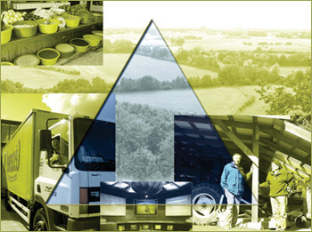

The Continental Markets scenario depicts a world of divided regional blocks.
The EU, USA and other OECD countries form one block. Each block is striving
for self suffiency, in order to be less reliant on other blocks. Trade barriers
continue to exist.
The Continental Markets scenario assumes:
- That social and cultural values can best be preserved in regional
political alliances with like-minded countries, within which nation
states should keep as much sovereignty as possible.
- Protection measures remain in place. Within this constraint, the society
prefers market-based solutions..
- After accession of Romania and Bulgaria no further enlargement of
the EU.
- The EU will form a single market with the USA and Canada.
- The policy regarding the international mobility of people from third
countries is restrictive. Cohesion policy is not seen as a priority.
- The overall economic growth rate is lower then in Global Economy and
Global Cooperation, especially in the Central and Eastern European countries
as well as in developing countries.
|
 |
- The technological development is also lower than in the other two scenarios.
- Maintenance (and extension) of nature reserves are not a priority.
Detailed scenario assumptions for the Continental Market scenario: